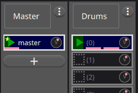

Concepts¶
Sync loop¶
Every session has one sync loop. Synchronized loop transitions occur when that loop restarts; immediate mode applies transitions without waiting. The sync loop may contain audio or MIDI, but it can also be silent and serve only as the timing reference.
The global record-cycle value controls fixed-length recording and retroactive grab duration. A value of zero means recording continues until another action stops it.
{kind=link}

Tracks and loops¶
Loops are arranged in track columns. Loops in one track share ports, input and output controls, monitoring, and an optional processor. The separate sync track is the timing reference for the main grid.
Regular tracks route audio and optional MIDI directly. Dry + Wet tracks can record the source and processed audio together. Their dry recording can later be played through the shared processor or used to replace the wet recording.
Processing¶
Native builds support external processing, Built-in FX powered by FunDSP, Built-in Synth powered by OxiSynth, and Carla Rack/Patchbay modes when native FX support is enabled. Browser builds support both built-ins in the AudioWorklet. Built-in FX is a matching-channel mono/stereo/N rack with Compressor, Drive, three-band EQ, Chorus, Modulation, and Reverb stages. Its required MIDI input and the global FX-control fan-out can apply learned absolute CC mappings to continuous controls; notes are ignored. Disabled stages do not run their effect DSP. Available choices are capability-driven, so a session requiring an unavailable processor is rejected rather than loaded partially.
Connections¶
The Connections window has a Tracks tab for System inputs to tracks and either bus inputs or System outputs, plus a Bus outputs tab for buses to System outputs. The Tracks destination toggle changes presentation only; direct and bus-mediated routes may coexist. Native host ports come from JACK or CPAL+midir. Browser host ports come from Web Audio and permission-gated Web MIDI. Connection state is explicit and kept separate from pending changes.
A new session starts with a disconnected stereo Master. The buses button in the bottom bar opens a resizable mixer pane. It can add named buses with mono, stereo, or larger channel shapes, drag their horizontal mixer strips into a persisted visual order, and remove them after confirmation. Master is removable and zero buses is valid. Bus order is presentation-only; all routes remain explicit.
Recording and grabbing¶
Normal recording starts prospectively. Grab captures recently monitored input from bounded always-on buffers, aligned to the sync or targeted loop. Selection applies actions to groups of loops; targeting lets one loop act as an alternate synchronization source.